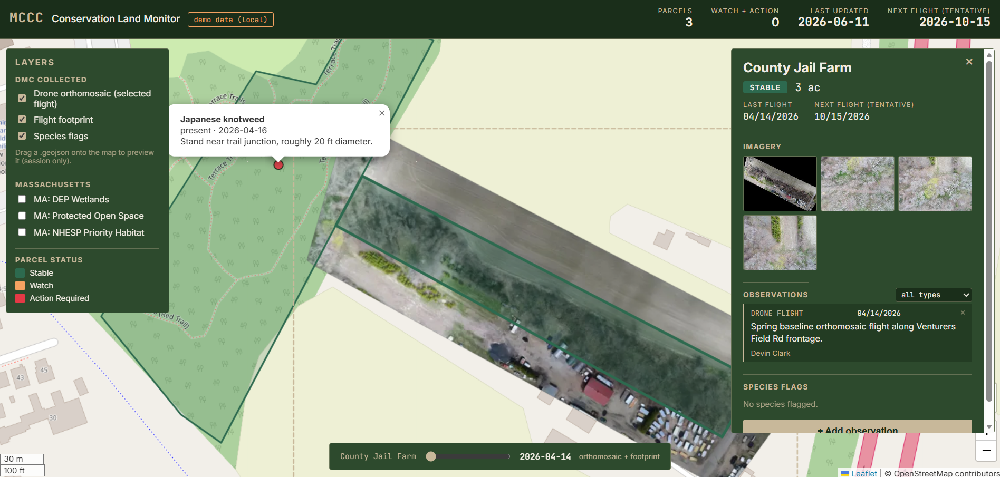

Web mapping
Conservation & Hostel Web Maps
Live, data-driven web maps that replace static PDFs and are built to grow across locations.

The problem
Organizations were stuck sending static PDF maps. A land coalition wanted to monitor conservation parcels and tell their story to donors and the public. A hostel network wanted one map showing every location with its amenities and live updates. A flat PDF could do neither.
What I built
Interactive web maps on Supabase (Postgres/PostGIS) and Leaflet. The data lives in a real database, so the map updates when the data does, and new parcels or locations drop in without rebuilding the site. I built each one end to end, from the data model to the deployed front end.
The deliverable
Hosted, interactive maps the client can share with a link and expand over time. The same pattern scales from a single site to a whole network.
- Supabase / PostGIS
- Leaflet
- JavaScript
Outcome
Clients move beyond static PDFs to a living map that updates with their data and grows with them. The conservation map supports monitoring and storytelling; the hostel map is structured to add locations as the network expands.